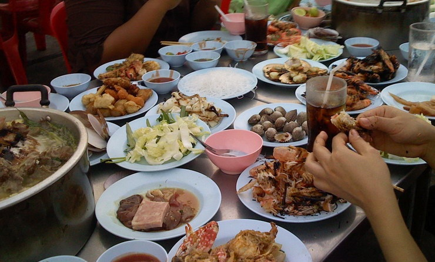
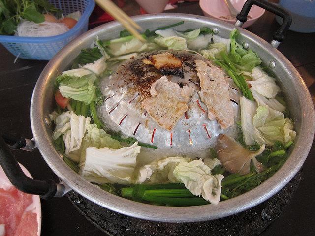

Тайская кухня: Муката - барбекю в Тайском стиле
Независимо от того живешь ты в Таиланде или просто проводишь свой отпуск, если ты любишь поесть много, ты не должен упустить шанс поесть в муката, тайском барбекю, работающем по принципу буфета или шведского стола (все что сможешь съесть). Муката это трапеза для небольшой дружной компании, которая может просидеть за столом несколько часов. Как-то раз я специально взвесился до и после посещения муката, разница составила три килограмма!
Слово муката (หมูกระทะ) состоит из му - свинина, и крата - сковорода. Буфеты муката, обычно большие площадью и количеством столов, располагаются не в помещении, а просто под крышей, не имеют кондиционера, а лишь вентиляторы, работать начинают вечером и открыты до самого утра.

Как и что едят в муката
Если ты читал статью про Чим Чум или знаком с тайским суки, то тебе понятен принцип, когда еда готовится в процессе употребления. Так же происходит и тут. Муката - аналог корейского барбекю. На стол ставится емкость с углями, а на нее специальное приспособление. С одной стороны это сковорода, с другой - кастрюля. Значит, продукты можно как варить, так и жарить. Оставь сервис заниматься установкой оборудования, а сам тем временем отправься к столам где расставлена еда.

Выбор еды в буфетах муката приличный. Кроме свинины, говядины, печени, яиц, зелени, капусты, во многих местах есть морепродукты, рыбные и мясные шарики, фрукты, десерты и холодные закуски, и, конечно же, большой выбор соусов. Напитки не включены, их покупать отдельно.
По возвращении к столу ты найдешь устройство для приготовления муката настроенным и готовым к работе, воду кипящей, и даже решетку для жарки смажут салом. Кстати, чаевые в муката принято оставлять. Ну а дальше как обычно - берешь то что на тебя смотрит, жаришь или варишь в бульоне, и ешь, не забывая макать в соус.
Буфеты муката в Бангкоке
Я знаю несколько очень популярных мест Бангкоке. Цены могут различаться от заведения к заведению, но обычно не выходят за пределы 120 бат с человека за все мясо, и 200 включая морепродукты. Напитки, естественно, в эту цену не входят. Газировка обойдется в районе 30 бат, а пиво - 150. Говорят раньше буфетов муката в Бангкоке было куда больше, но из-за подорожания аренды и продуктов многие из них закрылись. Я же перечислю несколько актуальных на 2013 год.
SD Bar BQ (เอสดี หมูกะทะ) на Pridi Banomyong (Sukhumvit Soi 71) между Pridi Banomyong Soi 29 и 31, добраться можно до станции BTS Phra Khanong, выйти на нечетной стороне Sukhumvit Road и сесть в тук-тук за 6 бат, который поедет по Pridi, либо такси или мотобайк, так же по Pridi ходят и автобусы. Буфет искать по левой стороне, если смотреть в сторону движения от Сукхумвит вглубь Pridi.
888 Family Mookata на Phahon Yothin Road. Это заведение немного дальше от центра Бангкока, чтобы добраться туда тебе нужно доехать на BTS до Mo Chit, или на MRT до Chatuchak Park. Дальше можно сесть на автобус (39, 63, 26) до Mayo Hospital, или на такси.
36 Moo Kata Tong на Sukhumvit Soi 50, ближайшая станция BTS - On Nut. Место примерно в квартале ходьбы от Sukhumvit Road.
Буфеты муката в Паттайе
В Паттайе я знаю отличное местечко на Pattaya Thai (Улица Южная Паттайя) за Третьей улицей (Chalerm Phrakiat). Называется вот так (เก่งหมูกระทะ), а вот ссылка на Foursquare.